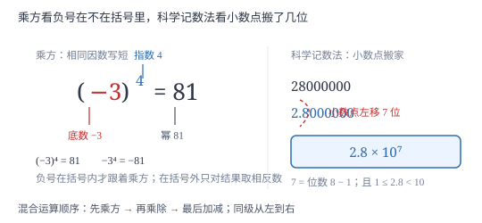

有理数的乘方、混合运算与科学记数法
乘方是乘法把同一个因数写短，符号规律因此沿用「奇负偶正」；混合运算按「乘方—乘除—加减」分层；科学记数法则是把大数写成小数点搬家的结果。
| 所属主题 | 有理数 |
|---|---|
| 所属模块 | 代数 |
| 课标学段 | 第四学段（7~9 年级） |
| 前置知识 | 有理数的乘法与除法、数轴、相反数与绝对值、有理数的加法与减法 |
| 核心素养 | 运算能力抽象能力应用意识 |
教材定位
人民教育出版社《人教版（2024版）义务教育教科书·数学》
七年级上册第2章 有理数的运算2.3 有理数的乘方
对应七上 2.3 有理数的乘方，含乘方、科学记数法、近似数三个课时。教材分课时讲，本篇合成一篇：三者共用「10 的幂」这一工具，分开讲会让 a^n 与 a× 10^n 的对应关系断裂。
说明
求 n 个相同因数 a 的积的运算叫乘方，记作 a^n，读作「a 的 n 次方」。其中 a 叫底数，n 叫指数，运算结果叫幂。符号规律由乘法直接继承：正数的任何次幂都是正数；负数的奇次幂是负数、偶次幂是正数，因为负号两两配对抵消，奇偶决定有没有落单；0 的任何正整数次幂都是 0。要特别注意括号：(-3)^2 的底数是 -3，结果是 9；-3^2 的底数是 3，前面的负号在乘方之外，结果是 -9。
含乘方的式子按三级顺序计算：先乘方，再乘除，最后加减；同级运算从左到右进行；有括号时先算小括号，再算中括号，最后算大括号。括号内的式子仍按这三级顺序走，由内向外逐层剥。每一步只做一件事，等号对齐写，不跳步。
大于 10 的数可以写成 a× 10^n 的形式，其中 1≤ a<10，n 为正整数，这叫科学记数法。n 等于原数的整数位数减 1，也等于小数点从原位置向左移动的位数。近似数方面，四舍五入到哪一位，就说精确到哪一位；有效数字指从左边第一个非 0 数字起、到末位数字止的所有数字，中间的 0 要算，末尾的 0 在表示精确度时也要算。
使用场景
乘方出现在「成倍增长」的一切地方：细胞每次分裂数量翻倍、纸张对折层数翻倍、产品销量每年翻一番、存款按年复利增长，都能写成 a^n 的形式。指数每加 1，结果乘一次底数，所以增长会越来越快，这就是「指数增长」的直观含义。
科学记数法专治大数：全国人口、国土面积、光速、地日距离、芯片上的晶体管数量，动辄七八位以上，写成 a× 10^n 既省位又便于比较大小（先看 n，再看 a）。近似数与有效数字则用于表达测量精度：仪器只能读到某一位，再往后写的数字没有意义，用有效数字把「可信到哪一位」说清楚。
注意点
-3^2 与 (-3)^2 是两个不同的式子。前者底数是 3，负号在乘方之外，等于 -(3× 3)=-9；后者底数是 -3，等于 (-3)×(-3)=9。判断只需问一句：负号在括号里还是括号外？分数作底数同理，\Big(2/3\Big)^2=4/9，而 \dfrac2^23=4/3，括号决定了谁被平方。
科学记数法里 a 的范围是 1≤ a<10，只能有一位整数。12800000 写成 128× 10^5 不合规，因为 128 不在这个范围内，正确写法是 1.28× 10^7。另外 n 是正整数，七上只处理大于 10 的数。
精确度与有效数字是两个不同的量，不能互换。2.5 万精确到千位、有两个有效数字；2.50 万精确到百位、有三个有效数字。数值相近的两个近似数，精确度可能不同，题目问「精确到哪一位」和问「有几个有效数字」要分别回答。
证明

图 1：乘方看负号在不在括号里，科学记数法看小数点搬了几位——两件事都靠「数位置」而不是背结论
证明
结论 1负数的偶次幂为正、奇次幂为负。
乘方是相同因数的乘法，(-a)^n 是 n 个 -a 相乘。每两个 -a 相乘得正（负负得正），所以 n 个负因数可以两两配对：n 为偶数时全部配成对，剩下正数，积为正；n 为奇数时配完还剩一个负号，积为负。例如 (-2)^4=(-2)(-2)(-2)(-2)=4× 4=16 为正，(-2)^3=4×(-2)=-8 为负。
关键一步依据是乘法符号规律「负负得正」可重复使用：奇偶性决定配对后有没有落单的负号，所以符号规律与多个因数相乘的规则完全一致。
结论 2科学记数法中 10 的指数 n 等于原数整数位数减 1。
考察 10 的幂：10^1=10 是两位数，10^2=100 是三位数，10^3=1000 是四位数，位数总比指数多 1。把一个整数写成 a× 10^n 且 1≤ a<10 时，a 只占一位整数，相当于把原数的小数点从末尾向左移动 n 位，每移一位位数减少 1。原数有 m 位整数，移 n 位后剩 1 位，故 m-n=1，即 n=m-1。
关键一步依据是 10^n 的位数比 n 多 1 这一事实，配合「小数点每左移一位、整数位数减 1」，两句话合起来就给出 n=m-1。
结论 3混合运算必须先算乘方，再算乘除，最后算加减。
乘方是乘法的缩写，a^n 本身就是一个乘法整体，它必须先合成一个数才能参与其他运算；乘除是加减的缩写，a× b 表示若干个 a 相加，也要先合成一个数。若打乱顺序，同一个式子会算出不同结果，例如 2+3^2 若先算加法得 25，若先算乘方得 11，而按定义 3^2 是一个整体，正确值是 11。运算顺序的规定，就是为了让每个式子只有唯一的值。
关键一步依据是运算的层级关系：乘方由乘法定义、乘法由加法定义，高级运算必须先合成整体，低一级运算才能使用它的结果；顺序规定保证结果唯一。
动手实验
取一张纸对折，记下每折一次的层数：1 次 2 层，2 次 4 层，3 次 8 层……规律是 2^n 层。对折 10 次就是 2^10=1024 层，纸已经厚得折不动了。再用计算器验证 2^10，并比较 2^9=512 与 2^10=1024：指数加 1，结果翻倍，这就是为什么指数增长会迅速失控。
解题思路
混合运算按五步走：第一步从最内层括号开始，把括号内当成独立式子；第二步在每一层内先算乘方，把所有 a^n 化成具体的数；第三步再算乘除，同级从左到右；第四步最后算加减；第五步复核符号，特别检查每个乘方有没有漏掉括号。写的过程一步一行，等号对齐，不要在一行里连做两三步。
科学记数法按三步写：第一步定 a，把原数的小数点移到第一个非 0 数字后面，得到满足 1≤ a<10 的数；第二步数 n，小数点向左移了几位，n 就是几（也等于整数位数减 1）；第三步写成 a× 10^n，并回代检验——把 a 的小数点向右移回 n 位，应当还原成原数。近似数则按「找精确位、看下一位、四舍五入、数有效数字」四步处理。
按场景的例题
例 1（场景：数据调查） 城市常住人口的写法与比较
某市常住人口为 12800000 人，另一市为 9.6× 10^6 人。(1) 把第一个数用科学记数法表示；(2) 比较两市的常住人口哪个多。
解：(1) 小数点从最右端向左移到 1 与 2 之间，得到 1.28，一共移了 7 位，所以 12800000=1.28× 10^7。也可用位数法：原数是 8 位整数，n=8-1=7。(2) 比较两个科学记数法的数，先看 10 的指数：1.28× 10^7 的指数是 7，9.6× 10^6 的指数是 6，指数大的那个更大，所以第一个市人口多。指数相同才需要比较前面的 a。
答：(1) 1.28× 10^7 人；(2) 第一个市人口更多。
例 2（场景：金融与增长） 销量每年翻一番
某产品今年销量为 3 万台，预计今后每年销量都翻一番。按此推算，三年后销量为多少台？用乘方表示计算过程。
解：翻一番即乘以 2。一年后 3× 2，两年后 3× 2× 2=3× 2^2，三年后 3× 2^3。先算乘方：2^3=8；再算乘法：3× 8=24。所以三年后销量为 24 万台，即 240000 台。若写成科学记数法，240000=2.4× 10^5 台。注意「三年后」对应的是 2^3 而不是 2^4：今年是第 0 次翻倍。
答：3× 2^3=24 万台，即 240000 台（2.4× 10^5 台）。
例 3（场景：物理情境） 光速与地日距离的数量级
光在真空中的速度约为 300000000 米/秒，地球到太阳的平均距离约为 150000000 千米。(1) 用科学记数法表示这两个数；(2) 已知一年约有 3.15× 10^7 秒，据此判断「一光年」应写成 10 的多少次方量级（只需给出数量级）。
解：(1) 光速 300000000 是 9 位整数，n=9-1=8，a=3，写成 3× 10^8 米/秒；地日距离 150000000 也是 9 位整数，n=8，a=1.5，写成 1.5× 10^8 千米。(2) 一光年是一年走过的距离，数值上约为 3× 10^8× 3.15× 10^7，指数相加得 15 量级，即约 10^15 米。本题只问数量级，因此看指数相加即可，不必算出精确值。
答：(1) 3× 10^8 米/秒，1.5× 10^8 千米；(2) 约 10^15 米量级。
例 4（场景：测量与工程） 零件标注的精度含义
某零件图纸标注长度为 2.50 厘米，另一处标注为 2.5 厘米。(1) 分别说出这两个近似数精确到哪一位、各有几个有效数字；(2) 两者在加工要求上有何差别？
解：(1) 2.50 的末位在百分位，所以精确到百分位（0.01 厘米），有效数字从第一个非 0 数字 2 起算到末位 0，共 3 个：2、5、0。2.5 的末位在十分位，精确到十分位（0.1 厘米），有效数字 2 个：2、5。(2) 2.50 要求误差不超过 0.005 厘米，2.5 只要求不超过 0.05 厘米，前者精度高十倍。同一个长度，多写一个 0 就表示更严的加工要求，这不是多余的写法。
答：(1) 2.50 精确到百分位、3 个有效数字；2.5 精确到十分位、2 个有效数字。(2) 2.50 的精度高十倍。
例 5（场景：方案选择） 两种付费方案的十年总支出
某学习平台有两种付费方案。方案 A：每天 100 元，共 10 天。方案 B：第 1 天 1 元，第 2 天 2 元，第 3 天 4 元，此后每天都是前一天的两倍，共 10 天。哪个方案总支出更少？
解：方案 A：100× 10=1000 元。方案 B 的每日费用是 2^0,2^1,2^2,\ldots,2^9，逐项算出为 1,2,4,8,16,32,64,128,256,512。求和：1+2+4+8+16=31，32+64=96，128+256+512=896，合计 31+96+896=1023 元。比较得 1000<1023，方案 A 少 23 元。方案 B 单看前几天很便宜，但倍数增长到后半程迅速抬升总额，这正是指数增长的典型特征。
答：方案 A 更少，共 1000 元；方案 B 需 1023 元，多 23 元。
常用推论
(-1)^n 的取值只有两种：n 为偶数得 1，n 为奇数得 -1。它常用来一眼定符号，例如 (-1)^2026=1、(-1)^2025=-1。
任何非零数的偶次幂都是正数，因此 a^2≥ 0 对一切有理数 a 成立，且只有 a=0 时取到 0。这条结论在后续配方、求最值时反复使用。
科学记数法的指数 n 等于原数整数位数减 1；反过来，已知 a× 10^n，原数的整数位数就是 n+1。
有效数字的个数与精确到的位数不是同一件事：2.50 与 2.5 数值相同，精确度与有效数字个数都不同。
易错点
错计算 -3^2 得 9。
为什么错把负号也当成了底数的一部分，实际上下标 2 只作用在 3 上，负号在乘方之外。
正确-3^2=-(3× 3)=-9；若想表示 -3 的平方，必须加括号写成 (-3)^2=9。判断口诀：负号在括号里才跟着平方。
错认为 (-2)^4=-16。
为什么错看到底数为负就判结果为负，没有数指数是奇数还是偶数。
正确(-2)^4 的指数是 4，偶数，四个负因数两两配对全部抵消，结果为正：(-2)^4=16。负数偶次幂为正。
错把 12800000 写成 128× 10^5。
为什么错只数了小数点移动的位数，忘了科学记数法还要求前面的因数在 1 与 10 之间。
正确128 不满足 1≤ a<10，必须继续把小数点左移两位，写成 1.28× 10^7。写完回代检验：把小数点右移 7 位应还原为原数。
直观理解
把乘方想成「反复翻倍」：指数是翻倍的次数，不是乘几。2^10 不是 20，而是翻十次，得 1024。科学记数法想成「小数点搬家」：搬了几步，10 的肩膀上就写几，a 只留一位整数，剩下的位数全交给指数。指数增长之所以可怕，正是因为每多一步就再乘一次底数。